LABDOOR
ROLE
Product Designer
DATES
2015-2016
About Labdoor
The Problem
If you’re trying to find a supplement in the US you may end up with a low quality and sometimes harmful product. The problem is that supplements are generally considered a safe substance by FDA, thus have low quality control standard.
Labdoor is a supplement marketplace. The goal is to be the resource where people go to find, research and buy the best supplements. Labdoor tests supplements for quality and ranks them so it’s easier for a consumer to choose the best one.
My Role
At Labdoor I was involved in designing various project around the product. From redesigning the entire enterprise website and improving the current consumer site, to designing logos, infographics and print. It was a somewhat fun and unusual experience for me because I got to work on a lot of little projects around the product rather than focusing on one core product. I will try to summarize some of the major projects I’ve worked on at Labdoor.
Current Website Improvements
When I joined, the website was just redesigned. But as we know, even after a fresh redesign we can still find a few of flaws/defects/shortcomings. Category and product pages felt a little messy, lacked focus and guidance. We investigated further and validated our assumptions through internal and external feedback, and user research. We found a few things that needed to be fixed on our product page and category page.
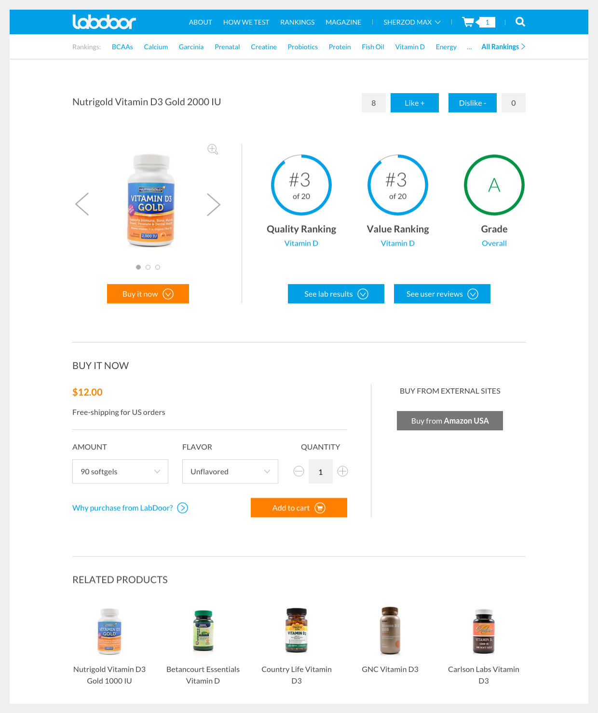Before
I noticed our product page had way too many buttons and features. Each button looked like a primary button on the page. The buttons were fighting for attention while only a few of them serving a real purpose. Due to engineering and time constraints we weren't able to remove all of them at once. As a quick fix, we removed fill from the secondary buttons so they draw less attention to help the user navigate towards prominent actions on the page.
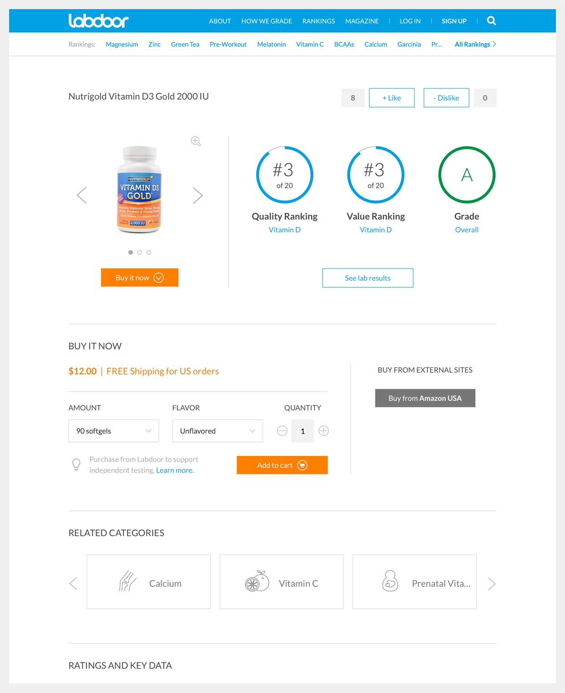After
For many people it was unclear why buy through Labdoor and pay extra. The explanation needed to be a little more informative. Some people kept asking if we offer free shipping. Although we had the text “Free shipping” right under the price tag, we had to make sure to make it's easily seen as well. While researching similar interaction in other products I’ve found out that almost any e-commerce website uses “FREE Shipping” - the word “free” is capitalized. Changing that little detail - putting it on the same line with price tag, and switching color - really made a difference. Since the change, we haven’t heard of any complaints and confusions.
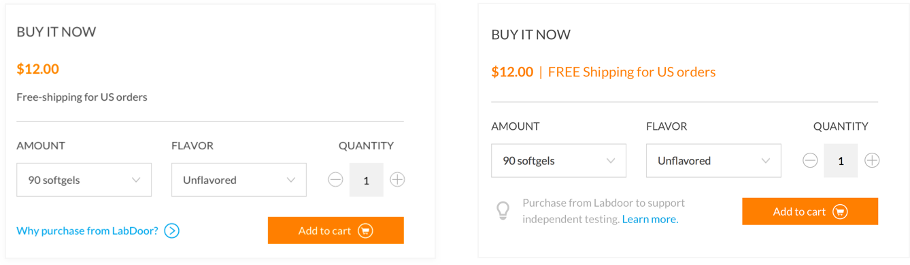Before and After
Based on feedback it was more relevant for people to see related categories rather than related products. We've found out that even when a person sees related ranked products she is less likely to explore it, and would rather go back to see full list.

Before
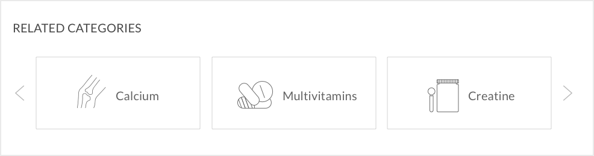
After
While working on a few projects simultaneously and focusing on details, it’s important to look at a bigger picture and check basics such as accessibility and consistency. We always make sure all changes perform well across web and mobile devices as well as different browsers.
Last but not least, new supplement categories are released every 6-8 weeks. Each one needs new custom icon. Here is are some of these icons I’ve designed for categories.
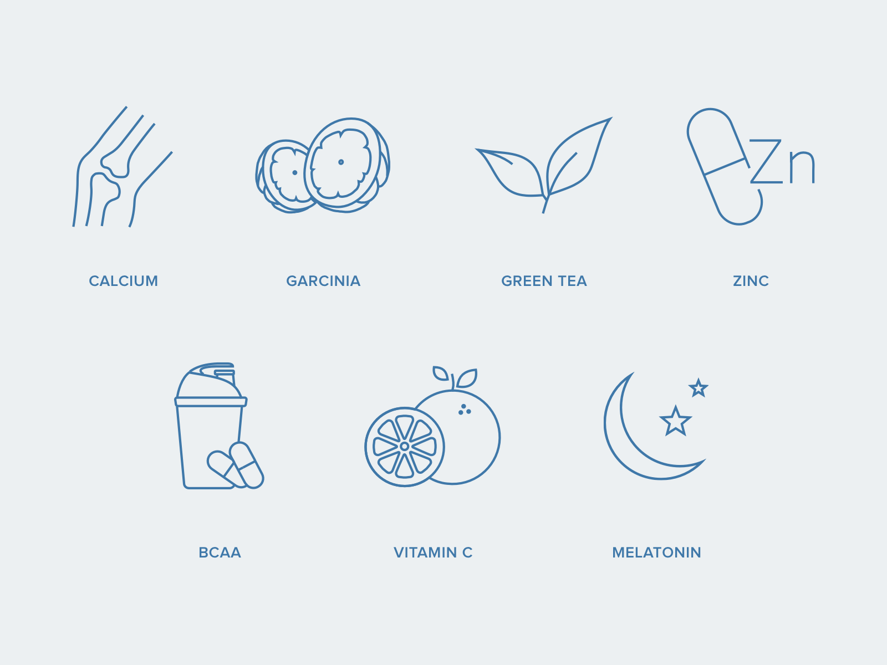Magazine
Magazine is Labdoor’s online resource to educate and inform people. It’s made in collaboration with editor and researcher at Labdoor. Along the way we have produced a number of infographics, science researches and data visualizations. Having no experience with infographic before, it was great not only to learn and practice data visualization design but also to educate myself on many health related topics.
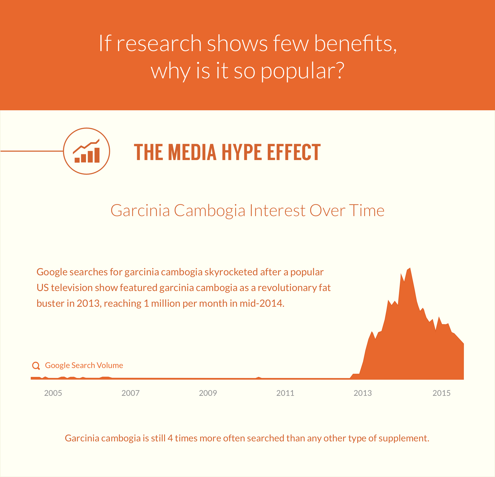(Yay, I got to practice print design!)
Haven’t been designing for print for over 5 years it was a exciting to get back at it and remind myself how to do it. Working on print makes me appreciate how spoiled we are with pushing digital products without making sure things are done 100% right. Hey, we can always go back and re-do it, then push it live again, right?
Print is quite the opposite. Check your work 700 times before sending to print shop. Mistakes are not allowed.
As for the process - it’s somewhat similar to my digital design workflow, but as mentioned earlier - the handoff process is quite different. First, understand the message we’re conveying with the brochure, understand the problem and the context. Research the best way to execute, best practices, best ways to structure the content. Then wireframe, explore different layout, get feedback, execute, team feedback, iterate, ship. (I’m ridiculously summarizing here.)
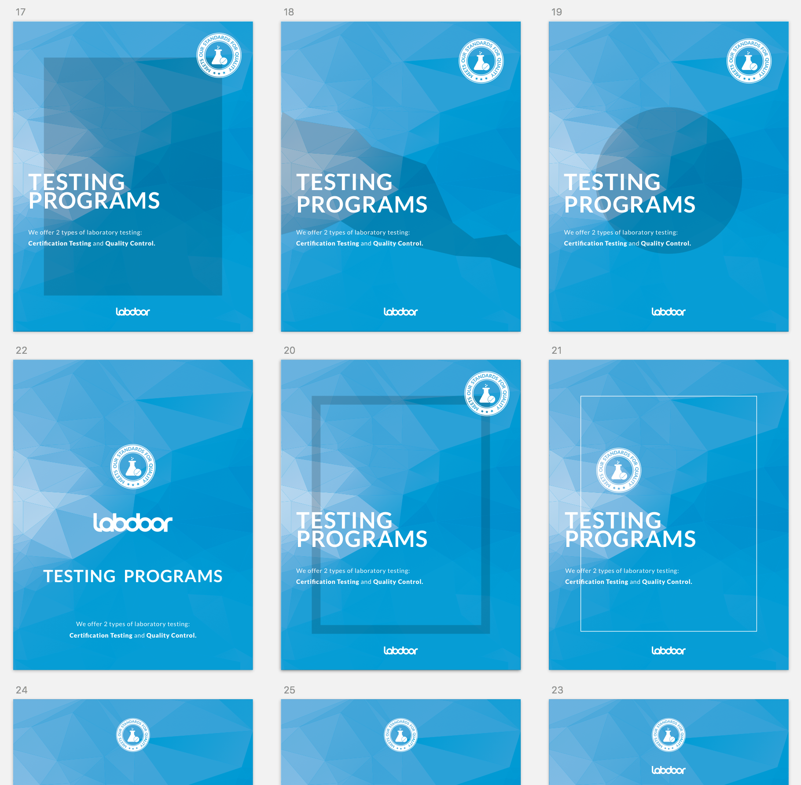Brochure cover iterations
After we’ve decided on copy, content structure, and had a sense for visual direction it was important to iterate and explore to find best layout to present the content. I’ve done most of the work of the work in Illustrator and polished design details with InDesign.
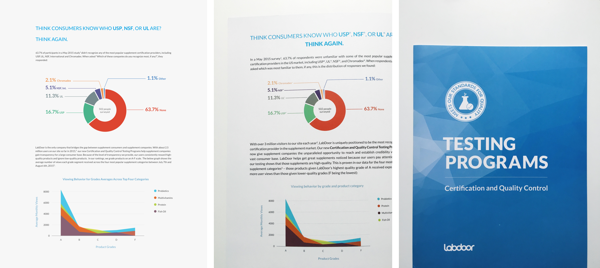Final Results
Constraints and Limitations
One of the challenges while designing the brochure was trying to put all the content on a somewhat limited amount of space. How can we have all the text and the graphics on just a few pages? It came down to prioritize either content or aesthetic and readability. We decided to reduce the font size and go with full page width lines of text, but it was worth it to properly convey the message.
Seal of Approval
To earn consumers’ trust, supplement companies reach out to Labdoor to get certification which comes with Labdoor’s seal of approval. That’s one the ways Labdoor monetize. Labdoor already had a small round seal, but recently Labdoor has started offering different types of testing, thus more seals for each testing program. I’ve researched and considered designing product seals that you see on supplement and prescription medication. We were considering a few variations of the seals that you can see below. To skip the details I will jut say - the goal of the seal is to represent it’s purpose, the program while being consistent with the brand and look good with a few Labdoor seals together.
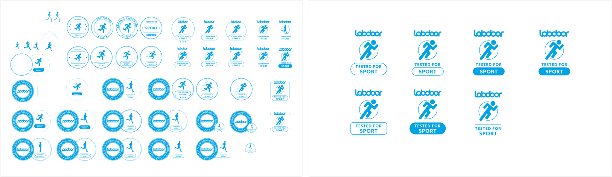Making seal iterations, and picking the best ones
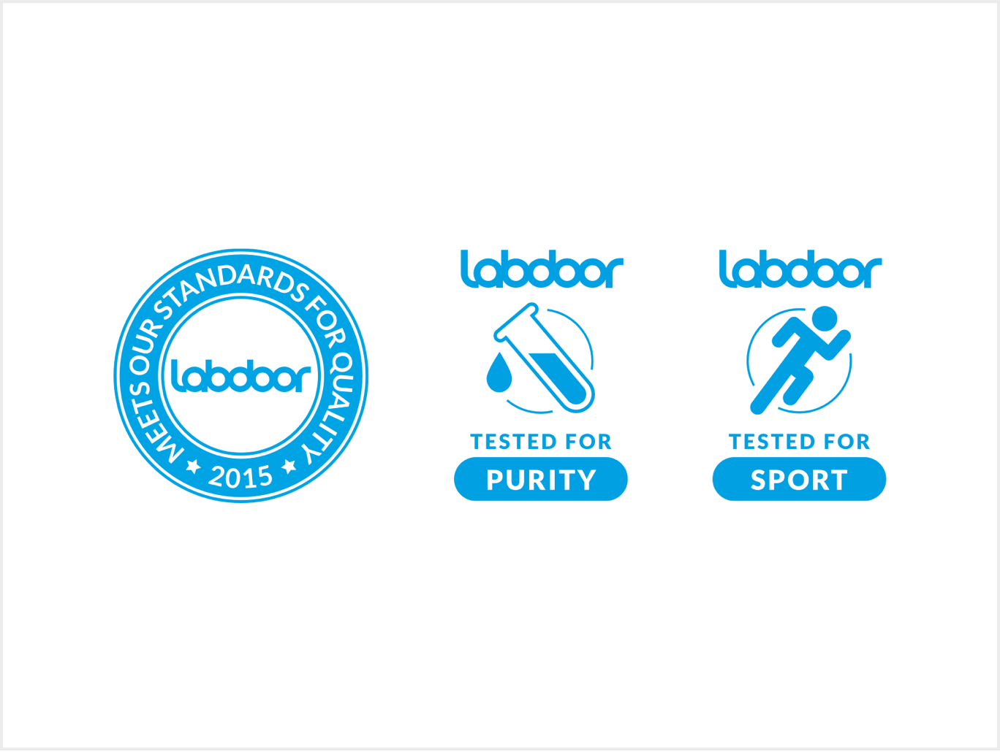
Final results
Enterprise Website
Since I’ve joined, Labdoor grew from 3 million unique yearly visitors to 7 million. As Labdoor grew, we’ve developed new services and new ways companies can test with Labdoor to get their product certified. Our old enterprise website became outdated, and needed to be updated with new content. We also took this opportunity to experiment new look and feel of Labdoor.
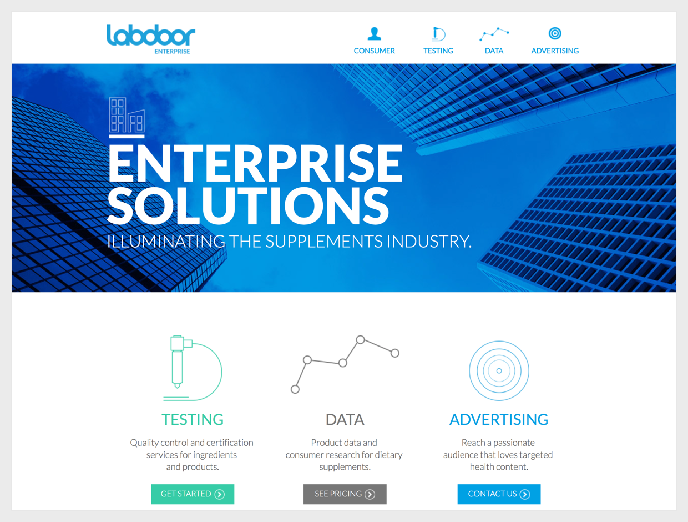Old enterprise website
The goal of the new Labdoor enterprise website is to clearly state Labdoor’s testing programs and to incentivize/encourage a potential client to submit a supplement to test. Besides that show the benefits of each testing option and difference between each other. Remove all unnecessary old content to reduce cognitive load.
After many brainstorms and discussions with our product team we have figured the best way to frame/state/say about our new services in ways that are understanding?
We spent time understanding the audience and considering various factors and uses cases. To name a few considerations:
- Wheat problems does it solve?
- Where people are coming from?
- How did they found out about Labdoor?
- What are their expectations about the product?
- What’s the message we’re sending?
- How can effectively introduce our brand and testing options we offer?
- Does the layout and presentation make the page easy to scan? Are we guiding the reader's attention?
- What’s currently missing?
- Why is it better than the current alternative?
Interviewing our current as well as potential clients and getting early feedback answered many of our questions, saved time, and eliminated designing on pure assumptions.
Comparative Assessment
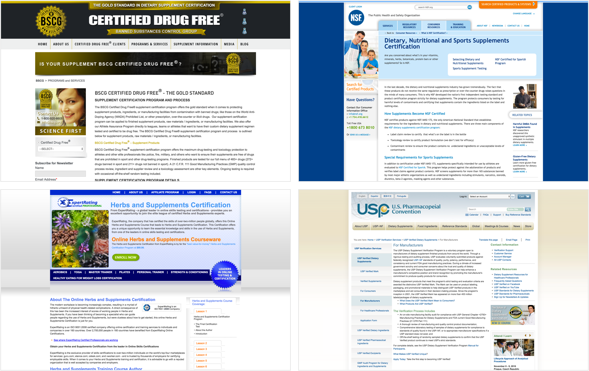Similar brands that offer supplement certification
Comparative assessment a great way to find out what customers are expecting to see on similar product, and how competitors structure and present their message.
Labdoor doesn’t really have direct competition. It’s mostly indirect in one way or another. Key findings from other services with similar services:
- Web pages are cluttered and hard to navigate. No sense of direction.
- Substantial neglect for visual design and overall consistency.
- The content as well as value proposition is lengthy and obscure. (Maybe so much redundant text helps them establish trust? Our research showed the opposite. 🤔)
- As for customer acquisition strategy it appears that the few of them that exist get clients through an established network from the past.
Plan and Execute
After understanding the requirements and setting priorities it's a good time to start brainstorming and developing possible solutions.
At this point, I usually sketch a map of the site to understand general flow, content structure and see if there is anything we’re missing. It’s a good time to get feedback from the team if there is any questions about product requirements or content.

Rough map of the website
We've found out that in most cases someone who lands on the Labdoor for Brands already intends to submit their product to test. We just have to describe our benefits and encourage the intended.
We questioned every detail of the current Labdoor Enterprise. Even its name. We've ~concluded~ that "Labdoor Enterprise" sounded a little corporate and that's not the association we want to send to our audience. We've renamed the site to "Labdoor for Brands" so it speaks better to our audience and sends the proper message.
Challenges
One of the challenges was presenting Labdoor’s Testing and Certification methods in a short, but clear/unambiguous/comprehensible/ way. Not all testing programs are certifications. We wanted make a clear distinction between three certifications and one internal testing program, despite that both of them fall into testing program category. In collaboration with my business development colleague I was exploring different layouts, as well as experimenting with the copy.
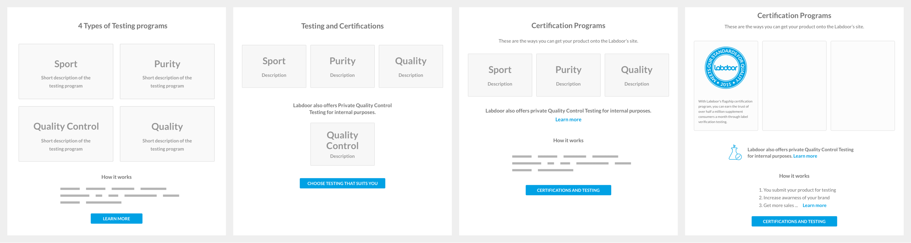Testing Programs layout iterations
As we were iterating, we’ve decided to prioritize certifications over internal testing based on earlier client feedback. (It suited the business better too.)
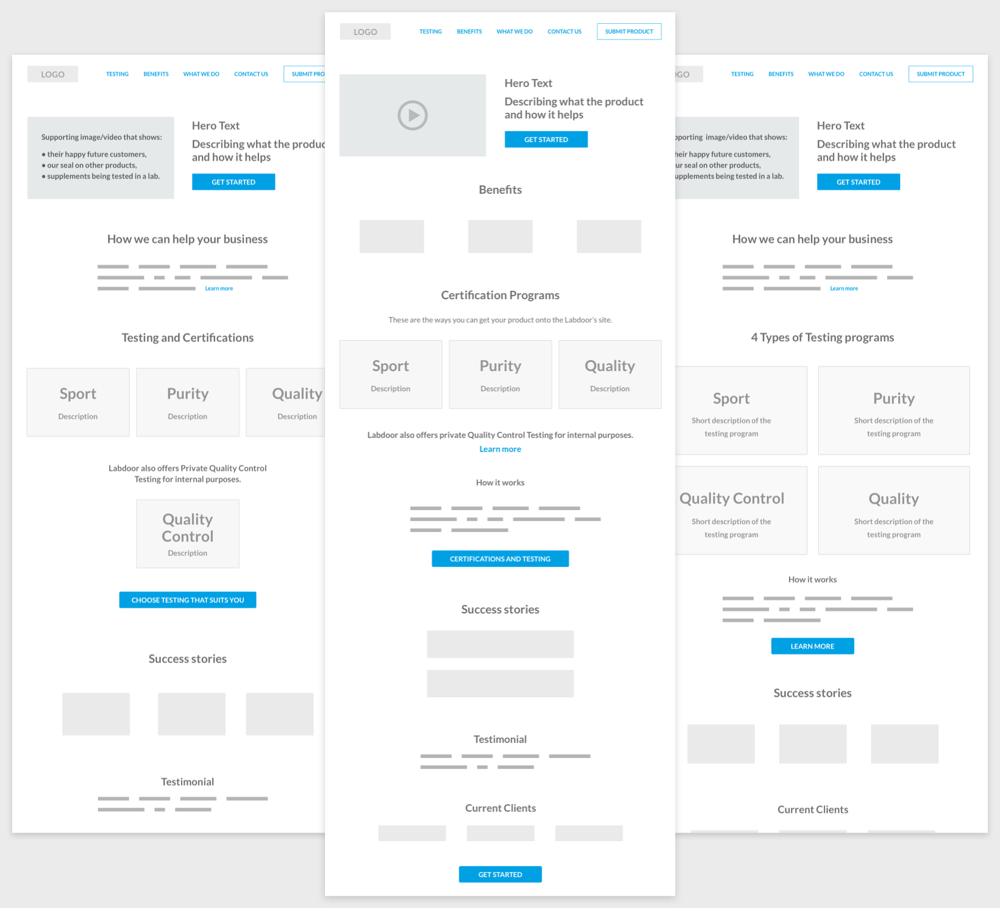Current iteration
Looking back at my market research, I decided that success stories is something our brand can include on the landing page to demonstrate social proof. Since the company received a lot of positive feedback from the current enterprise clients and a short testimonial would go hand in hand with success stories.
While diving into visual details I kept in mind the overall look and feel we want to portray as a brand: clean, modern and trustworthy. Therefore I tried to stick with simple theme, familiar navigation followed by distinct elements and concise copy. After all, its meant to be read by the audience of 30-40 year olds working in the pharma industry.
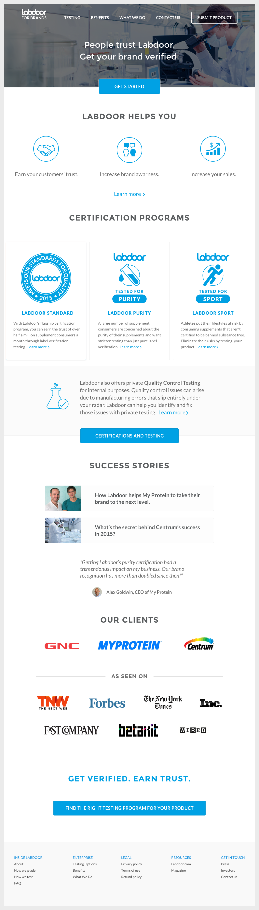Current iteration
Labdoor for Brands is still in its process of coming together and hasn’t launched yet. But I can’t wait to see it’s new redesign and the benefits it will bring to supplement manufacturers.
Lessons Learned
It’s always great to go back and look the product, see what could’ve done better. As product people many of us usually tend to do that without any reminders. I took time to reflect at Labdoors' work, and realized there was a lot of things that we could have done better. It goes beyond design itself. It’s “little/qualitative” things such as team communication, being pro-active, picking the right battles, talking to a bigger audience and spending more time on research. I’ve learned a lot of nuances while designing a health product for such a diverse audience in mind.
As a team we faced a lot of challenges since our audience is so diverse and everyone has different complaints and challenges. It’s not easy to please everyone, and often as a startup your resources are limited and you have to ruthlessly prioritize what to build next.
While we’ve drastically improved overall growth, currently, one of the Labdoor’s biggest challenges is user retention. However, it has to do with the nature of the product. People often don’t go back to buy supplements at the same place they bought them before. If you’re at CVS shopping for office supplies, you might as well just get your supplements too.
You may ask why did I work on infographics, magazine or print? Was it important for the product? Yes, and that’s another thing I’ve learned. All these small things add up and have a direct/big impact on growth of the product. Which is the primary goal and the main metric of our success. Sometimes, these things are not very obvious, but ... (it's important to not underestimate them but instead ask "How they contribute to our goal?")
I’m excited about the work I’ve done for Labdoor, and all the things I’ve learned while I was there. I’m thankful I was able to contribute to its growth and make the product easier to use. It was an honor to work with such talented and passionate team, on a meaningful product that helps people stay healthy.
“Stay tuned” and you will see how Labdoor expands to testing cosmetics, and evolves into a much more but sophisticated but unified product.